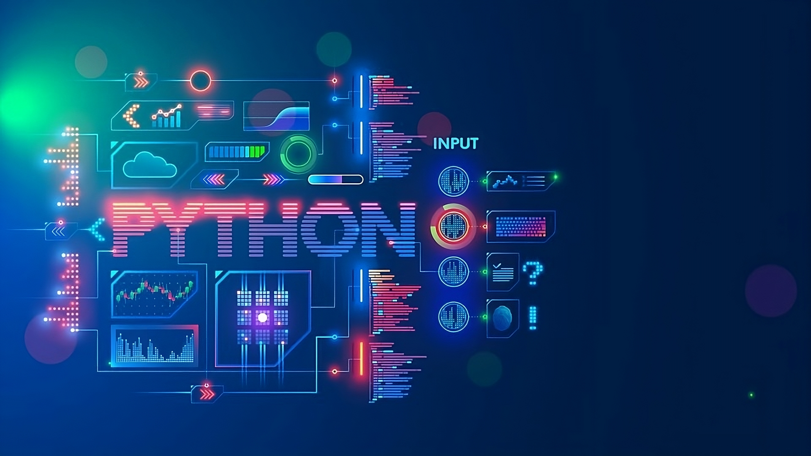

História do Python
Python é uma linguagem de programação de alto nível, interpretada, de tipagem dinâmica e multiplataforma. Desenvolvida por Guido van Rossum e lançada pela primeira vez em 1991, Python tem sido amplamente adotada tanto por iniciantes quanto por programadores experientes devido à sua simplicidade e legibilidade.
Origens e Evolução
O desenvolvimento do Python teve início no final dos anos 1980, quando Guido van Rossum, então trabalhando no Centrum Wiskunde & Informatica (CWI) na Holanda, sentiu a necessidade de uma linguagem de programação que fosse fácil de usar e extremamente poderosa. Ele queria uma linguagem que fosse capaz de lidar com exceções e interfaces de usuário, além de ser capaz de falar com sistemas operacionais Amoeba.
A primeira versão pública do Python, Python 0.9.0, foi lançada em fevereiro de 1991. Desde então, Guido van Rossum liderou o desenvolvimento da linguagem, trabalhando para expandir suas capacidades e comunidade de usuários ao longo dos anos.
Python 2.0, lançado em 2000, introduziu várias melhorias importantes, incluindo o suporte a Unicode, o que ajudou a solidificar a base de usuários da linguagem ao redor do mundo. No entanto, a transição para o Python 3.x começou em dezembro de 2008, focando em melhorias significativas na sintaxe e funcionalidades, embora tenha exigido uma adaptação gradual devido à incompatibilidade com versões anteriores.
Popularidade e Aplicações
Nos últimos anos, Python emergiu como uma das linguagens de programação mais populares e amplamente usadas em todo o mundo. Sua simplicidade e legibilidade tornaram-no a escolha preferida para uma variedade de aplicações, desde desenvolvimento web e automação até análise de dados, inteligência artificial e aprendizado de máquina.
A flexibilidade de Python é amplamente apreciada na comunidade de desenvolvedores, que criou uma vasta gama de bibliotecas e frameworks para facilitar diferentes tipos de projetos. Exemplos incluem Django e Flask para desenvolvimento web, NumPy e pandas para computação científica, e TensorFlow e PyTorch para aprendizado de máquina.
Comunidade e Suporte
Python possui uma comunidade globalmente diversificada e altamente engajada de desenvolvedores. A Python Software Foundation (PSF), uma organização sem fins lucrativos, foi estabelecida para promover o desenvolvimento da linguagem Python, apoiar sua comunidade e garantir sua evolução contínua.
A PSF realiza conferências anuais como a PyCon, workshops educacionais e oferece suporte através de documentação extensa, fóruns online e grupos de usuários locais. Além disso, a PSF trabalha para manter a compatibilidade entre versões do Python e promover boas práticas de desenvolvimento.
Conclusão
Desde suas origens modestas até se tornar uma força dominante na programação moderna, Python continua a evoluir e a influenciar positivamente a maneira como milhões de desenvolvedores em todo o mundo abordam problemas complexos de programação. Sua combinação única de simplicidade, poder e vasta comunidade garante que Python permanecerá uma escolha preferida por muitos anos, moldando continuamente o futuro da tecnologia.